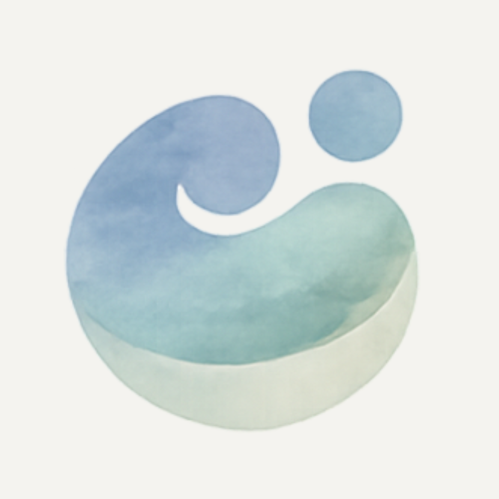
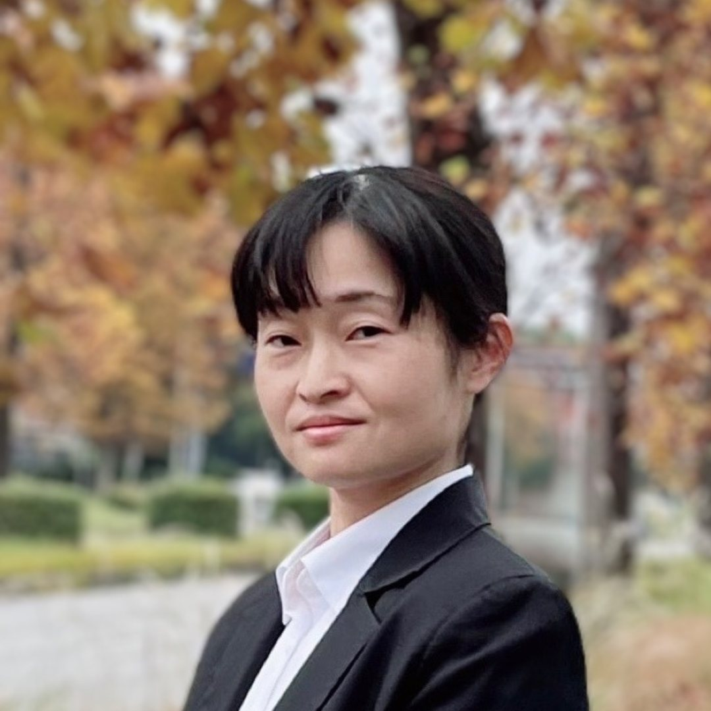

不登校の親御さんは、すでに精神的に疲弊しています。「子どもが学校に行かない」という現状を受け入れ、別の道を探し始めた時点で、多くのエネルギーを使い果たしています。しかし、そこからさらに「情報の海」に飛び込み、比較検討を行わなければならないのが現実です。
あなたの今の状況や気持ちを、ゆっくり一緒に整理します。
必要に応じて、選択肢や考え方を一緒に整理します。
スクールへの問い合わせ、見学の段取りをお手伝いします。
迷いや不安を言葉にする過程に、そばで寄り添います。
学校への復帰を目的としたサポートは行っていません。
特定の団体から紹介料や報酬を受け取ることはありません。中立性を大切にしながら、お話を伺います。
あくまで「親」の意思決定を支えます。
個人による伴走型サービスです。公的・医療的窓口ではありません。
まずは公式LINEからご連絡ください。簡単な自己紹介と、今困っていることをお聞かせください。LINEでのやりとりは無料です。必要に応じて、こちらからオンライン相談をご案内します。（ご希望があれば、すぐに始めることもできます。）
Zoom または Teams を使用したオンライン相談を行います。テレビ会議が難しい場合は、公式LINEの通話機能による電話相談も可能です。お子さんの状況やご家庭の希望、通学範囲などを伺いながら、状況を整理し、考え方や選択肢をご提案します。
初回の無料相談の後、
といった場合には、2回目以降のご相談から有料となり、2週間を1単位とした「伴走サポート」が始まります。
■ 伴走サポートに含まれる内容
■ 追加オプション
対面相談・見学同行を追加する場合（1時間）＋3,000円
最初の伴走サポートが終わったあとも、状況の変化や、新たな迷いが出てきた場合には、あらためてご相談いただくことができます。具体的な検討や判断を伴うご相談は有料でのご案内となります。一定期間が空き、状況整理から行う場合には、あらためて初回無料相談（30分）をご利用いただくことも可能です。

1985年生まれ、つくば市春日に住んでいます。子どもが幼稚園の頃から行き渋りがあり、小1の1学期から本格的な不登校に。子どもをフリースクールに通わせるため、2023年に当時住んでいた茨城県鹿行地域からつくば市へ転居しました。現在、2人の子どもがそれぞれ別のフリースクールに通っています。
フリースクールの情報を集め、見学し、「決める」という行為の重さで、心の調子を崩した経験があります。だからこそ、答えを出す人ではなく、迷いを言葉にして整理する伴走者でありたいと考えています。
2026年2月より、noteを始めました。フリースクール探しで迷う親御さんのために、少しずつ記事を書いています。
「いきなり相談するのは少しハードルが高い」——そんな方にも、まずは無料で読める情報として、お役に立てたら嬉しいです。
無料で読めるnoteはこちらご相談は公式LINEから受け付けています。
公式LINEで相談する